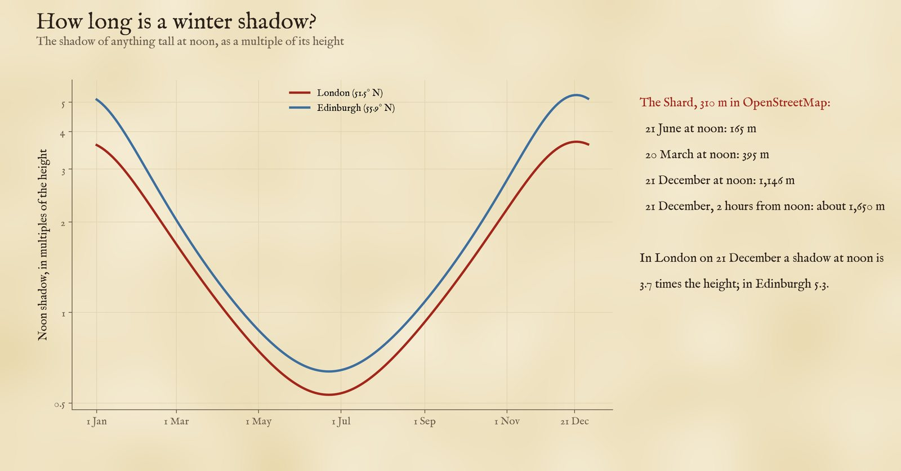
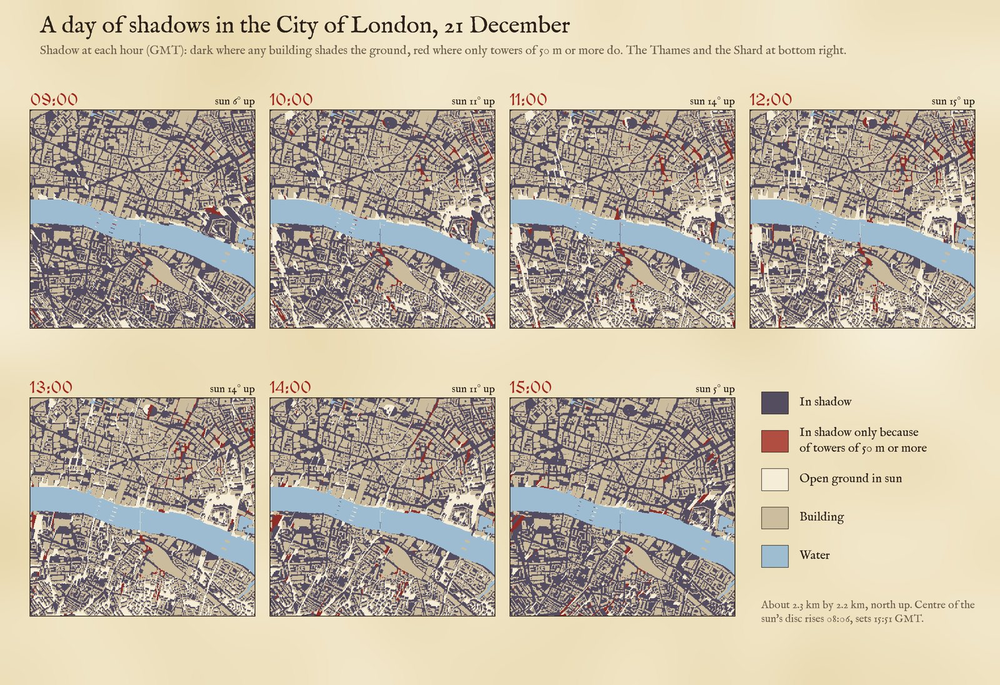
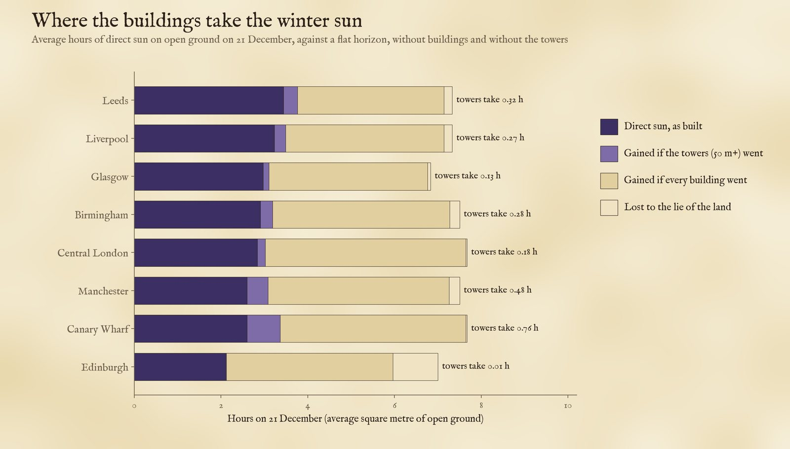
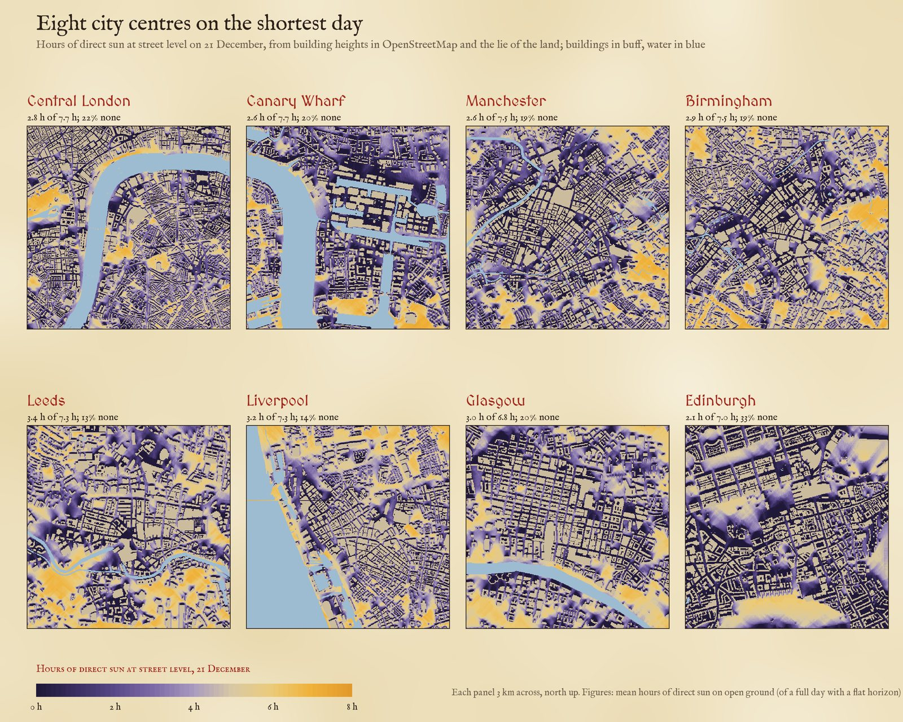
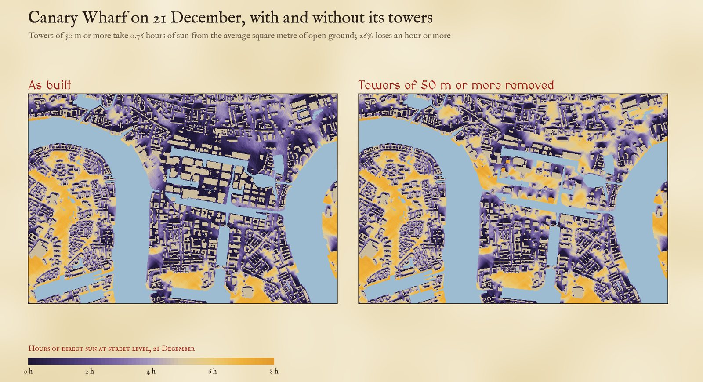
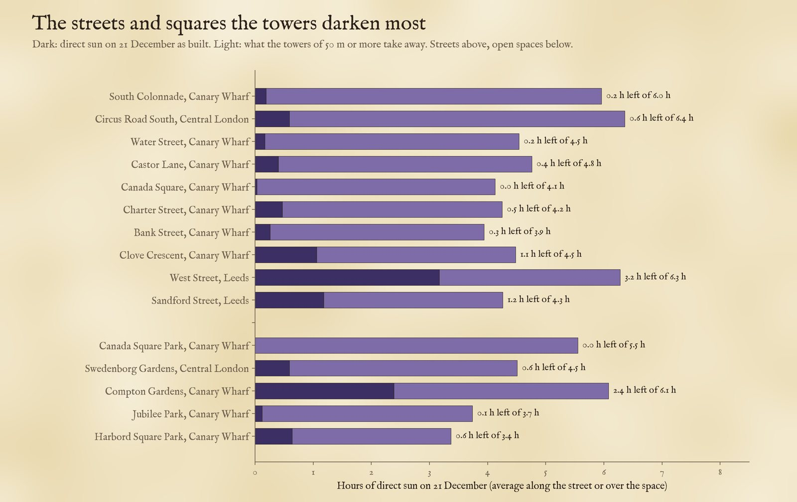
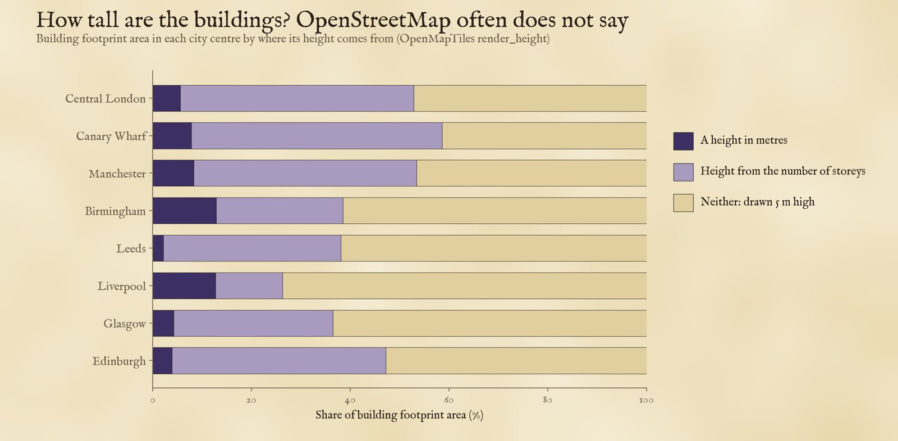

Where the buildings of eight UK city centres cast their shadows, hour by hour, on the shortest day, the equinox and midsummer. Red marks ground in shadow only because of towers of 50 m or more. Tap a tower or a street.
On the shortest day the sun at noon stands only 15.1 degrees above the horizon in London and 10.7 in Edinburgh. Every building casts a shadow 3.7 times its height in London at midday, and far longer in the morning and afternoon. As British cities build upwards, which streets and squares lose their winter sun, and how much of the loss is down to the towers?
I took the heights of every building in OpenStreetMap across eight city centres, laid them on a 5 m grid with the lie of the land beneath, and traced the sun every ten minutes from sunrise to sunset on 21 December, 20 March and 21 June. The map shows the shadows on each hour. Red marks ground that would be in sun if the towers of 50 m or more were taken away.
At noon on 21 December a shadow is 3.7 times as long as whatever casts it in London and 5.3 times in Edinburgh. A tower of 300 m in London would throw a noon shadow 1,110 m long. The Shard, 310 m tall in OpenStreetMap, reaches 1,146 m at noon on the solstice and about 1,650 m two hours either side, against 395 m at the equinox and 165 m at midsummer.

The noon shadow as a multiple of the height, through the year.

The City of London through the shortest day. Dark: in shadow. Red: in shadow only because of towers of 50 m or more.
In winter the dense ordinary city does most of the damage. On the average square metre of open ground in central London, direct sun lasts 2.8 hours of a 7.7 hour day; without any buildings it would be 7.6. Removing only the towers would give back 0.18 hours. Canary Wharf is the exception: there the towers take 0.76 hours from the average square metre, and 26% of the open ground loses an hour or more to them. Manchester, with its cluster of towers at the south end of Deansgate, comes next (0.48 hours).

Average hours of direct sun on open ground on 21 December.

Hours of direct sun at street level on 21 December, 3 km across each centre.

Canary Wharf on 21 December, as built and with the towers of 50 m or more removed.
The streets that lose most to towers are at Canary Wharf: on 21 December South Colonnade keeps 0.2 hours of direct sun, against 6.0 without the towers. Of open spaces, Canada Square Park at Canary Wharf loses the most, keeping 0.0 hours of a possible 5.5. In central London the biggest losses are round Battersea Power Station and the new towers beside it (Circus Road South keeps 0.6 hours of 6.4), on the Marylebone Flyover, and at Elephant and Castle and Vauxhall. 209 of 3,469 named streets lose an hour or more to towers on the shortest day.

The streets and open spaces that lose most winter sun to towers.
Edinburgh has hardly any buildings over 50 m in its centre, yet it is the darkest of the eight: 33% of its open ground gets no direct sun on 21 December. It is the furthest north, so its noon sun is only 10.7 degrees up. The land takes about an hour of a seven-hour day on average, more than anywhere else, but on its own it leaves only 0.7% of open ground without sun. The all-day shade is cast by ordinary buildings: on flat ground they alone would leave 29% in shadow, and the ridge of the Old Town above its valleys adds the rest.
Buildings. Heights come from OpenStreetMap through the OpenFreeMap vector tiles: each building part's height, else its number of storeys at 3.66 m each, else a default of 5 m. The default covers a lot: between 41% of building footprint at Canary Wharf and 74% in Liverpool has neither a height nor a storey count. Tall buildings nearly always have a height or a storey count, but ordinary buildings drawn at 5 m are too short, which makes the streets look sunnier than they are and, if anything, inflates the share put down to the towers, since some ground they shade would already be in the shade of taller ordinary buildings. Heights from storeys can also run high for residential towers: Landmark Pinnacle at Canary Wharf (75 storeys, 233 m) comes out at 275 m, and the tallest tower of South Quay Plaza (68 storeys, 215 m) at 249 m.

Where the building heights come from, by footprint area.
Shadows. Each centre is a 5 m grid with a 1.2 km margin so that buildings outside it can shade it. The ground is the AWS Terrain Tiles at about 90 m. For each position of the sun every ten minutes I swept the grid along the sun's direction and marked every cell whose sky line is blocked. I compared the city as built with the city without its building parts of 50 m or more, and without any buildings. The towers counted and mapped are those parts with a merged footprint of at least 300 square metres; thinner ones (spires, chimneys, masts) are left out of the count but are in the comparison, where they change the result by less than 0.01 hours. Sun positions include atmospheric refraction, which shortens the noon shadow very slightly (3.71 times the height in London without it).
What this cannot say. No trees, no awnings, no cloud. The terrain is too coarse for cliffs and cuttings. Building parts raised on stilts or bridges are treated as solid. Streets are the named roads in the tiles, measured 4 m either side of the line.